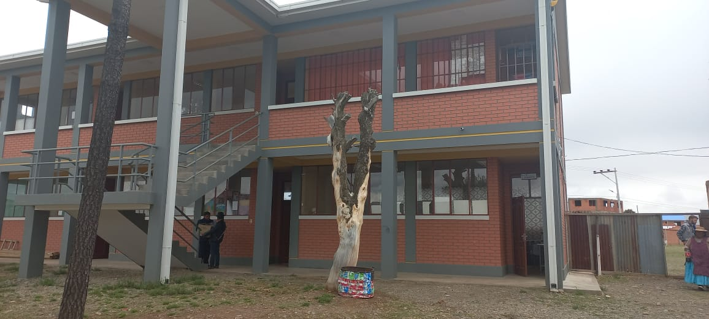
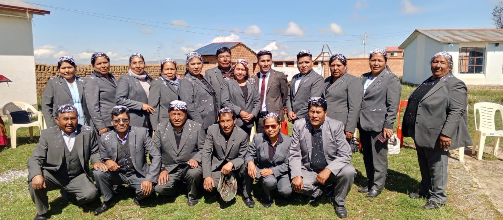
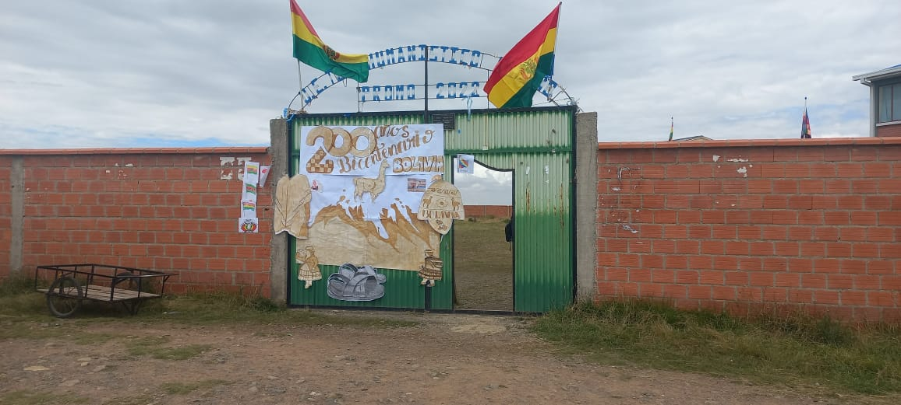
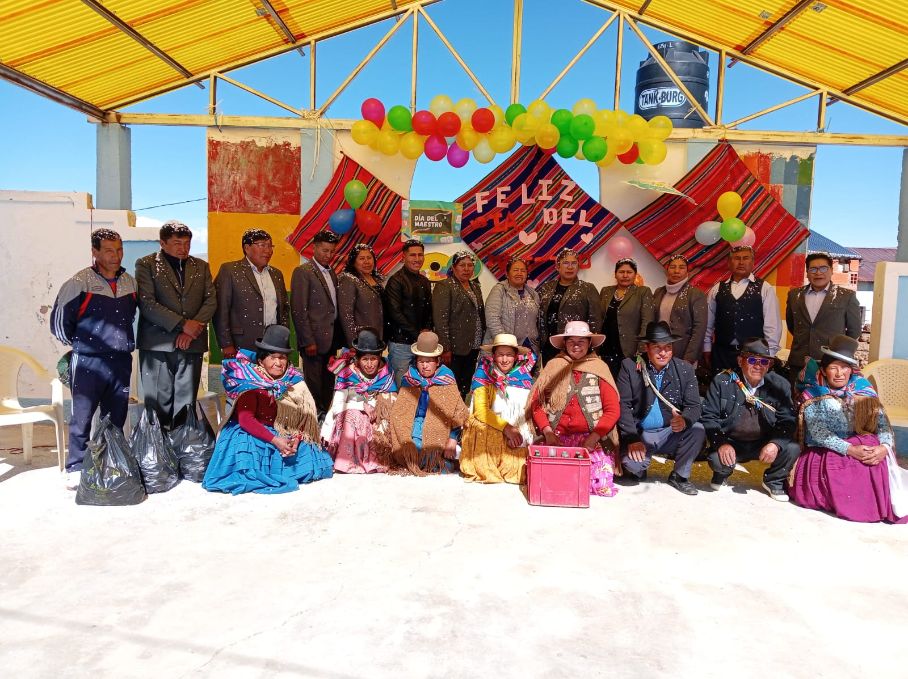
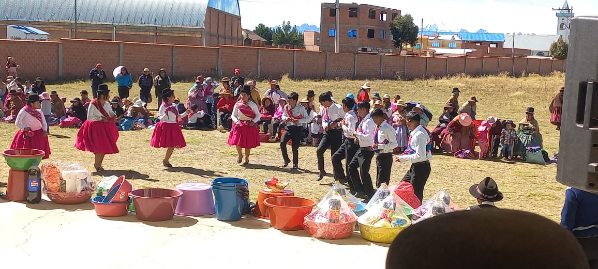
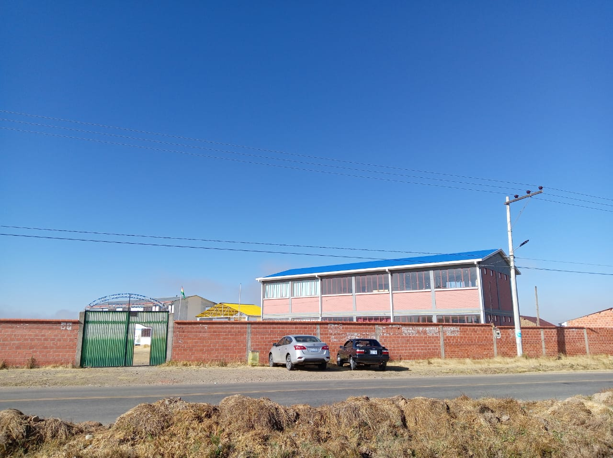

Bienvenidos a la U.E. "Andino"
Portal informativo para estudiantes, docentes y familias. Aquí encontrarás la historia de la institución, talleres, información por curso y recursos educativos.
Nuestra Historia
Estado Plurinacional de Bolivia
MINISTERIO DE EDUCACION
DIRECCION DEPARTAMENTAL DE EDUCACION LA PAZ
RESOLUCIÓN ADMINISTRATIVA N° 1000/2011
LA PAZ, 05 DE DICIEMBRE 2011
VISTOS Y CONSIDERANDO:
Que el inciso m) del parágrafo I del Decreto Supremo N° 0189 establece que una de las atribuciones de la Dirección Departamental de Educación es aprobar el funcionamiento y cierre de Unidades Educativas de Convenio, Privadas, de Educación Alternativa y Especial en el marco de la reglamentación emitida por el Ministerio de Educación.
Que en atención a la nota presentada por los representantes de la Unidad Educativa mencionada, la Dirección Distrital de Educación Pucarani, ha remitido el expediente con la propuesta de legal funcionamiento de la Unidad Educativa “Andino”, adjuntando los antecedentes correspondientes para la emisión de la presente Resolución Administrativa.
Que la Dirección Distrital de Educación Pucarani, ha remitido el expediente con la propuesta de legal funcionamiento de la Unidad Educativa “Andino”, adjuntando los antecedentes correspondientes para la emisión de la presente Resolución Administrativa.
Que la Unidad Educativa “Andino”, funciona desde la gestión 1998 con el Nivel Secundario, en el Turno de la Tarde, dependiente de la Dirección Distrital de Educación Pucarani, con el NUIS N° 80260086 y que cuenta con el Nivel Secundario, de acuerdo a la R.M. N° 004/04 de fecha 28 de enero de 2004.
Que los informes legales N° 1751/2011 de fecha 05 de diciembre de 2011, CITE: USS N° 2820/2011 de la Dirección Jurídica de la Dirección Departamental de Educación La Paz y el Informe Técnico N° 1916/2011 de fecha 05 de diciembre de 2011 del Área de Planificación, recomiendan la aprobación del legal funcionamiento de la Unidad Educativa “Andino”, dependiente de la Dirección Distrital de Educación Pucarani, con el Nivel Secundario y en el Turno de la Tarde.
Que, de conformidad con los informes referenciados en la reglamentación respectiva es necesario emitir la correspondiente Resolución Administrativa.
POR TANTO:
La Directora Departamental de Educación La Paz en uso de sus específicas atribuciones conferidas por el D.S. N° 0189 de 10 de junio de 2009, la R.M. N° 040/04 de 28 de enero de 2004 y la R.M. N° 556/04 de 24 de noviembre de 2004.
RESUELVE:
ARTÍCULO 1.- APROBACIÓN.
Aprobar el legal funcionamiento de la Unidad Educativa “Andino”, dependiente de la Dirección Distrital de Educación Pucarani, con el Nivel Secundario, Turno de la Tarde, con dependencia de la Subvención del Estado, ubicada en la Comunidad de Villa Asunción del Cantón Huayna Potosí, Provincia Los Andes, Zona Central, Municipio de Pucarani, del Departamento de La Paz.
ARTÍCULO 2.- CUMPLIMIENTO.
La Dirección Distrital de Educación Pucarani, es la responsable de dar cumplimiento a la presente resolución.
“Por una Educación Plurinacional, Productiva y Comunitaria”
Av. Illimani N° 1595-Central Piloto-2202153 - Central Telefónica: 2202577 - 2202577 - 2202271 - 2201294 - Fax: 2201984 - 2202580
D D E - L P Z
DIRECCIÓN DEPARTAMENTAL DE EDUCACIÓN LA PAZ
Ministerio de Educación
Estado Plurinacional de Bolivia
ARTÍCULO 3.- (CODIGO).
Anótese en la base de datos de la información del sistema departamental de Registros, Comunidades, Unidades y Archivos.
Regístrese, Comuníquese, Cúmplase y Archívese.
Conforme al Informe Técnico N° 1916/2011, CITE: USS N° 2820/2011 y Código de Edificio SIE de la Unidad Educativa N° 80260077, a través de código SIE de la Unidad Educativa N° 80260077.
Nivel Secundario, asigna el mismo código SIE de la Unidad Educativa “FUE” para la Unidad Educativa “Andino”, según registro de la presente resolución, para el Turno de la Tarde.
Dirección Departamental de Educación LA PAZ.
Reuniones
Comunicados de Reuniones
Haz clic en el siguiente enlace para ver los comunicados actualizados.
Ver comunicadosCursos (1ro a 6to de Secundaria)
Haz clic en “Ver curso” para abrir la página independiente de cada grado.
👩🏫 Docentes de la Unidad Educativa
En la Unidad Educativa Técnico Humanístico “Andino” contamos con un equipo de docentes comprometidos con la formación integral de nuestros estudiantes. Cada profesor aporta sus conocimientos, valores y experiencia para brindar una educación de calidad técnica y humanística.

ACTIVIDADES
Celebraciones de fechas civicas en la Unidad Educativa Andino
ver actividadesGalería







Ubicación
La Unidad Educativa Técnico Humanístico “Andino” se encuentra ubicada en la comunidad de Chipamaya, un lugar lleno de cultura, tradiciones y compromiso con la educación. Desde este espacio formamos estudiantes con valores, conocimientos y capacidades técnicas que contribuyen al desarrollo de la comunidad y del país.

Contacto
Dirección: Comunidad Chipamaya, Municipio Pucarani, Provincia Los Andes — La Paz, Bolivia.
Teléfono: +591 73549128
Acceso directo por WhatsApp:
Enviar WhatsApp